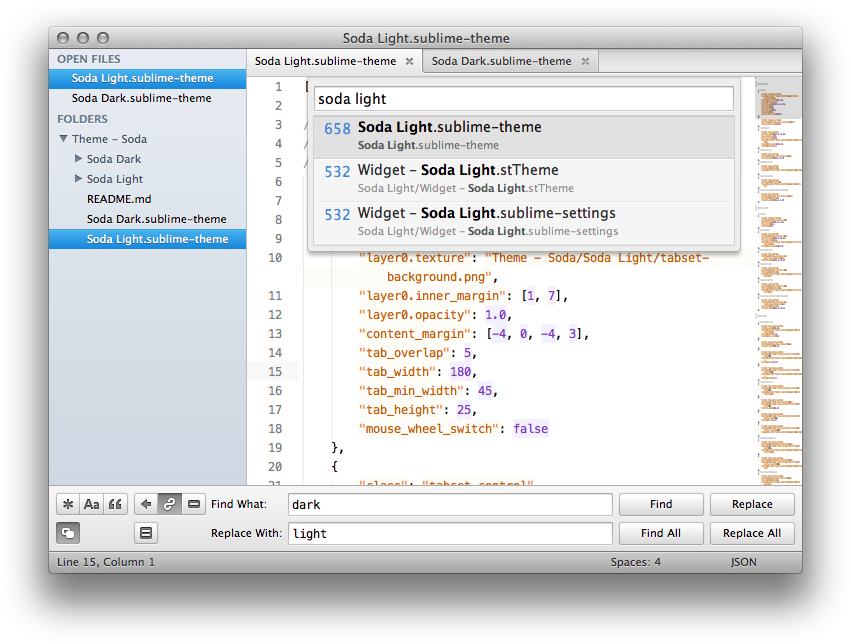
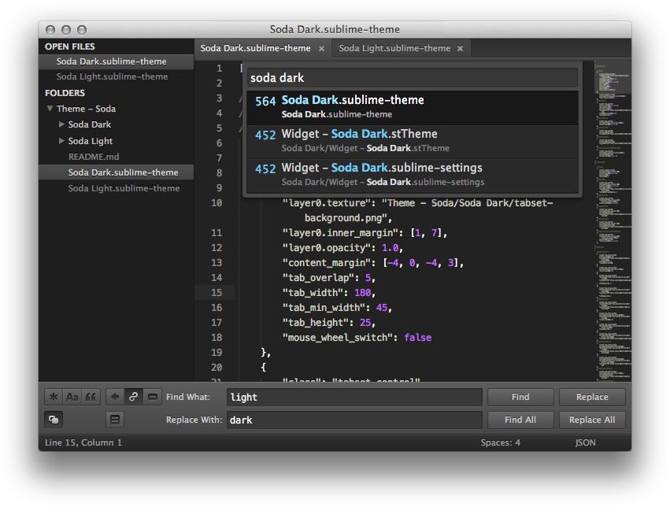

Soda Theme: Soda Light
Soda Theme: Soda Dark
Soda Theme
Dark and light custom UI themes for Sublime Text 2.
Installation
Soda theme is designed to work with the latest development build of Sublime Text 2.
Using Sublime Package Control
If you are using Will Bond’s excellent Sublime Package Control, you can easily install Soda Theme via the Package Control: Install Package menu item. The Soda Theme package is listed as Theme - Soda in the packages list.
Using Git
Alternatively, if you are a git user, you can install the theme and keep up to date by cloning the repo directly into your Packages directory in the Sublime Text 2 application settings area.
You can locate your Sublime Text 2 Packages directory by using the menu item Preferences -> Browse Packages....
While inside the Packages directory, clone the theme repository using the command below:
git clone https://github.com/buymeasoda/soda-theme/ "Theme - Soda"
Download Manually
- Download the files using the GitHub .zip download option
- Unzip the files and rename the folder to
Theme - Soda - Copy the folder to your Sublime Text 2
Packagesdirectory
Activating the theme
To configure Sublime Text 2 to use the theme:
- Open your User Settings Preferences file
Sublime Text 2 -> Preferences -> Settings - User - Add (or update) your theme entry to be
"theme": "Soda Light.sublime-theme"or"theme": "Soda Dark.sublime-theme"
Example User Settings
{
"theme": "Soda Light.sublime-theme"
}
Additional Features
Alternate Tab Styles
Soda Theme ships with two alternate UI tab styles.
By default, a square tab style is used. If you’d prefer to use the original curved tab style, add the following custom setting to your Settings - User file:
"soda_classic_tabs": true

Retina Resolution UI
Soda Theme has been designed to take advantage of retina resolution (high-dpi) displays. Both Soda Light and Soda Dark support retina displays.

Theme Customisation
Sublime Text 2 provides an elegant way to tweak existing themes without having to duplicate or maintain a separate copy of the original theme. If there are aspects of Soda Theme that you would like to adjust, take a look at the theme customisation wiki page.
Bonus Options
Syntax Highlighting Colour Schemes
The Soda Light screenshot uses a modified version of Espresso Tutti Colori and the Soda Dark screenshot uses a modified version of Monokai.
If you’d like to use the syntax highlighting schemes shown in the screenshots:
- Download colour-schemes.zip
- Unzip and place the extracted
tmthemefiles in the Sublime Text 2Packages/Userfolder - Enable the colour scheme via
Preferences -> Color Scheme -> User
Code Font
The code font shown in the screenshot is Menlo.
Development
Please note, Sublime Text dev builds move quickly and changes can occur with the theme API between releases, so there may be occasions where the theme doesn’t quite work with a brand new dev release.
While developing the theme, I have documented some theme challenges and ideas encountered along the way.
License
Soda Theme is licensed under the Creative Commons Attribution-ShareAlike 3.0 License. You are free to share and remix the theme, however please abide by the license terms when doing so.
The following details apply to the Creative Commons license “author specified” components:
Attribution example: Based on Soda Theme by Ian Hill (http://buymeasoda.com/)
Naming guidelines: If you create and distribute a derivative theme, please give your theme a unique and original name that does not directly include “Soda Theme” (or a close variant) in the main project title, repo name or Package Control name.